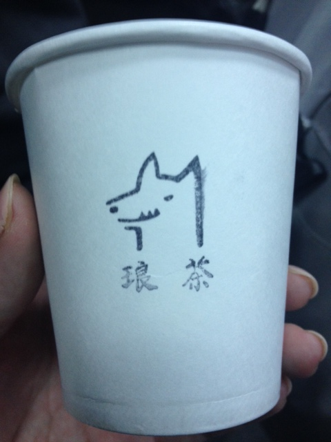

RubyConf 台湾 2014 参加・発表レポート
- RubyConf 台湾 2014 参加・発表レポート

- Code of Conduct/ RubyKaigi2013 と RubyConf Taiwan2014
- 公式記録
- 他の参加者のレポート
- まとめ
- 写真提供
書いた人 : 鳥井 (新姓 笹田)
RubyConf 台湾 2014 参加・発表レポート
はじめに
2014年4/25 (金) - 4/26 (土)、RubyConf 台湾 2014（RubyConf.tw）に参加・発表して、地元の Ruby コミュニティと仲良くさせてもらってきました。発表にあたってのあれこれと、個人的に RubyConf.tw で受けた感銘について語ります。
日本からの参加者は、観測範囲で、まつもとさん、Ruby コミッタの柴田さん、笹田 (耕一) さん、角谷さん、郡司さん、SpiceLife の堀さんと五十嵐さん、RailsGirls Osaka のつじたさとみさん。その他に RailsGirls の創始者リンダや、よく日本に来ている Ruby コミッタ _zakk もいて、アウェイ感はなかったです1。
2013 年 RubyKaigi で日本に来てくれていた竜堂終氏、高見龍氏がオーガナイザー側にいてくれて、再会も楽しいものでした。
場所
台湾の首都、台北。都市の中心からは少し離れた、国立陽明大学の立派なホールです。メインのセッションは大ホールで１トラック、その他のセッションは大ホールと小ホールの 2 トラックで行われました。
台湾は、文化あり、美味しいものあり、温暖な気候に恵まれた、旅とカンファレンスに最適のロケーションです。小籠包がおすすめです。
0 日目 (羽田 -> 台北松山、ウェルカムディナー)
羽田から 4.5 時間弱、時差は 1 時間。空港から一歩でた瞬間汗ばむ陽気でした。 あやしい中国語とみぶりでタクシーを捕まえてホテルへ。
台湾 Ruby コミュニティの方々が地元ごはんに連れて行ってくれることになり、「士東市場」までアテンドしてもらいました。海外カンファレンスは、地元 Ruby コミュニティと交流できるのが嬉しいですね。


案内してくれた RubyConf.tw スタッフの女の子ふたりは、RailsGirls Taipei に参加した縁でスタッフまでしてくれているとのこと。RailsGirls が Ruby コミュニティへの入り口として機能していてすばらしいなー。そのうちの一人、大学で情報マネジメントを学んでいるという女の子は RubyConf.tw の Android アプリの作者でありました。デキル。
1 日目
正直に告白すると、2 日目の自分の発表までの記憶がほとんどありません…。資料が間に合ってない、しかも LT 以外の初めての海外発表でかなり余裕がなく、ほぼ記憶が飛んでいます。
Matz の Keynote の勇姿でごまかされてください！
会期中うれしかったのが、無限中国茶の提供。Wolf Tea (狼茶) さんブランドの温かいお茶と冷たいお茶が飲み放題、おいしかったです。
かわいい Wolf Tea はんこ。 
2 日目
2 日目のメインセッションは Linda & Terence の “How the Principles of Ruby Inspired the Rails Girls Community”。RailsGirls のムーブメントの紹介と、それがここまで広がった原動力について話してくれました。

前述のように、ひきつづき自分の発表前で、いっぱいいっぱいでした。同じく発表を控えた zakk と “I’m so nurvous”、”Me too.” って言い合うランチタイム.
昼食休憩後、わたしの発表でした。発表資料は “The Guide to know Ruby implementation for non-C language programer” です。C 言語プログラマーでない人間が Ruby の実装を読むための初歩の初歩、という発表。
とりあえず笑いが取れたのでよかった。「いい発表だったよ！」とか「自分も Ruby 読んでみるよ！」とか声かけてもらって嬉しかったです。わたしも良い発表を聞いたら、その気持ちを直接伝えられるようにがんばりたい。
今回の発表の反省として：
- 発表準備は早めに (他のセッションを聞きたいのなら特に)
- 英語の発表は、早口になりやすいので、いつもの二倍くらいかける気持ちで喋ってちょうどいい
- 最初に発表内容のターゲットを表明しておくのは有効 (今回だとnon C programer)
- たいていの人は緊張しているので、自分が緊張するのも当然くらいに思っていい
- みんなやさしいよ
というのがありますので、今後海外発表される方は参考にしていただけると嬉しいです。 特に、台湾は英語がネイティブではないので、こちらの英語もがんばって聞いてくれるしゆっくり話してくれるし、初発表にいいと思います。
発表後は心の余裕もでき、
- JRuby の Charles Nutter “Growing Up - Bringing Concurrency to Ruby”
と
- CRuby の Koichi Sasada “Object lifetime analysis with Ruby 2.1”
のセッション対決なんかを楽しみました。
so norvous だった zack の発表はこちら。Zachary Scott: “Contributing To Ruby: Part Two”。手書きのすごくかわいいスライドで Ruby2.1 の new feature を紹介してくれています。
最後の LT では、高見龍による RailsGirls Taipei 活動報告がぐっと来ました。2013 年の RubyKaigi の後に行われた RubyHiroba で、わたしが属する RailsGirls in JP は、”RailsGirls, More!” という企画を行いました。そこに来てくれた高見龍さんが RailsGirls に興味を持って、RailsGirls Taipei が実現した、という実に嬉しいお話があったのです。

そしてその RG Taipei の参加者の女の子たちと 0 日目にごはんを食べて楽しい時間が過ごせたと思うと、実にコミュニティ活動は人のためならずですなぁ。
Code of Conduct/ RubyKaigi2013 と RubyConf Taiwan2014
寝た子を起こすような話ではあるんですが、去年の RubyKaigi 2013 周辺では、コミュニティ内での女性に対する態度が批判を受け、議論となったことがありました。その批判の一つに、台湾から参加された方の LT の発言に対するものがありました。そのことで、わたしも意見を表明したり、LT をされた竜堂さんと個人的に語り合ったこともありました。わたし個人としては、竜堂さんはすごく親しみのもてる良い方で、RubyKaigi アフターパーティではともに銀河英雄伝説の話で盛り上がった、素敵な友人だと思っています。
RubyConf.tw 2014 では、まず Code of Conduct (CoC) のなかに、 ジェンダー、性的傾向、障害、外見、人種、年齢による “harassment-free” が宣言されています。そして、わたしを暖かく迎えてくれた Ruby 台湾は、RailsGirls 参加者がコミュニティの力として活躍する、とても nice なコミュニティでした。
関係者のみなさんの誠実な、前向きな活動の結果だと思います。
いろいろ難しい問題はあると思います。今回の RubyConf.tw 2014 でも「CoC が守れたのか？」という疑義もでたようです (RubyConf Taiwan 2014 「女性歧視」事故再掀 Code of Conduct 風波)。
（追記：上記の記事は、実際は”台湾のRails Grilsは女性参加者に限るのは女性への差別化行為だ”という後半が本旨との指摘を受けました。また、カウンターの意見として、RailsGirls tw 参加者からの反論もここに上げておきます (わたしの見たCoC-RailsGirlsとオープンソースコミュニティ) 。
日本でも、きっとこれからも似たような問題はいくつも起こるでしょうし、その度に考えさせられたり、議論したりするでしょう。誰にとっても居心地のいい場所をつくるまで、道のりは長く、ちょっと面倒くさく、みんなが納得するのは難しいことも多いでしょう。
でも、RubyConf.tw で、将来プログラミングの仕事に就きたい、と元気に語る女子大生を見ていると、まぁ現状に悲観する前にちょっと努力するのもいいかもなぁと思ったのでした。
公式記録
他の参加者のレポート
HsbtDiary RubyConf Taiwan 2014 2日目
HsbtDiary RubyConf Taiwan 2014 3日目
まとめ
台湾いいところなので、来年の RubyConf.tw はぜひ行きましょう。
写真提供
-
この記事を書いている鳥井は、日本での RailsGirls を開催する活動に関わっています。 ↩